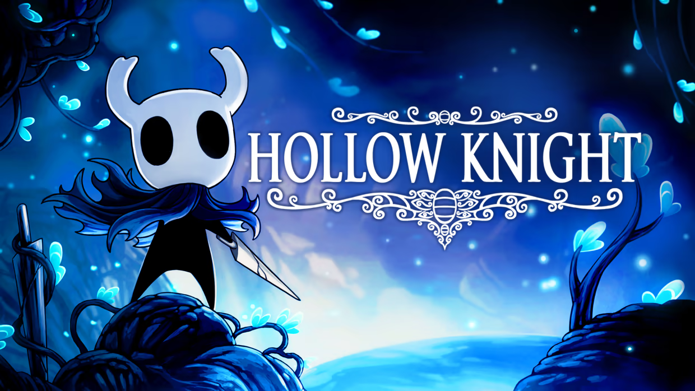
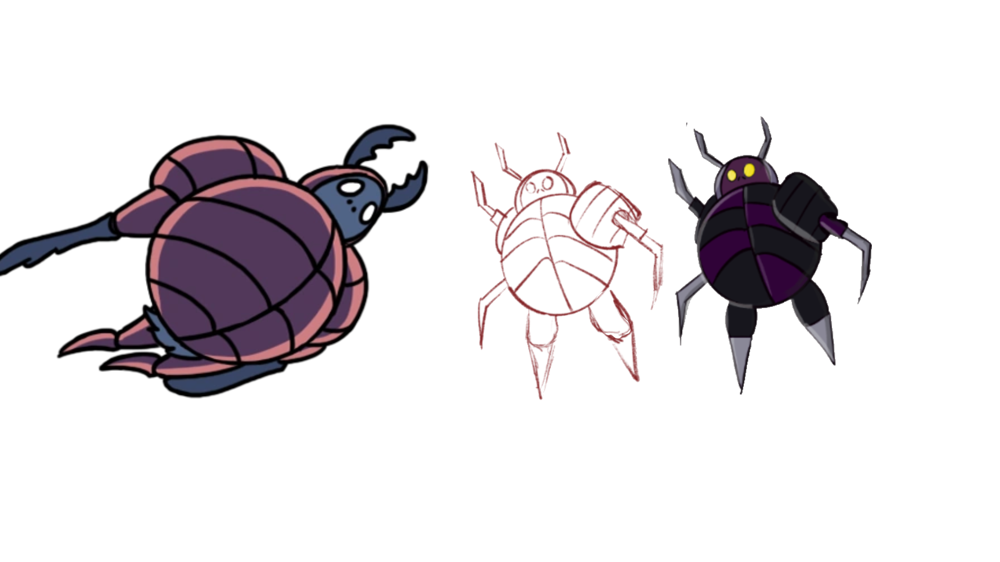

Nimona Culminating Project
Mentioned in Critical Thinking and Problem-Solving + Digital Literacy.
Go to Critical Section
Critical Thinking and Problem-Solving
I located and processed information effectively during this course by doing extensive research on various traditions, pop culture and historical influences to provide a fresh perspective in my assignments.
An example of this is during our Nimona Culminating Project, I researched various superhero/villain archetypes and cultural influences to create a unique character. My character, Tiger, was inspired by my favorite character in the 2016 cult-classic video game: Hollow Knight.

The character is called the “Dung Defender” and it is easy to see parallels between not only the design of both the characters, but the abilities and behaviors of each character too.
The Dung Defender VS My character, Tiger
The dung defender burrows through the ground, popping out when he sees fit. This is the inspiration for my character’s ability to tunnel through sand.

Here is a list of things where I located and processed information during the Nimona culminating project:
- I read and analyzed Nimona in order to seamlessly integrate my character into the world of Nimona.
- I utilized graphic design principles learned online to further better my character card.
I interpreted and synthesized by combining elements from fiction and nonfiction to create Tiger, the most obvious example of this being the fact that Tiger takes massive inspiration from the real life beetle: the Tiger Sand Beetle.
I showed problem solving skills in drafting and editing including critical analysis of my character’s story when I evaluated the plausibility and how interesting a detail would be every time I added it to my character’s origin story, values, weaknesses or strengths. I originally thought I would do part 3 of the assignment in graphic novel format; however, after realizing that I would not be able to fully bring to life the story I wanted to tell without using lots of words I decided to scrap the idea and move to an all text format.
Here is a snippet of the first text I wrote in graphic novel format:
PANEL 1
Ballister and Nimona looking over the desert. There is an army marching below.
Nimona: “Wow, so this is where the institution has been farming the jade root.”
Ballister: “Yep. They have been farming on the edge for years and the city just gave them a grant to expand their operations further south.”
END OF PANEL
Here is a snippet of the revised text I wrote after getting advice from friends and family members in pure text format (annotations have been removed):
Ballister and Nimona stood on a jagged cliff in the middle of the immense desert, their forms silhouetted against the light of the setting sun, a barren landscape with shifting sands that whispered tales of long-forgotten times and hidden battles beneath the surface. Nimona’s eyes were wide with fear and wonder as she cast her gaze across the horizon.
“Wow, so this is where the institution has been farming the jaderoot,” she said, her tone carrying a hint of alarm.
Ballister gave a stern nod, his jaw clenched. “Yes. They have been farming the edge of the land for years, and now that the city has given them a new grant, they’re extending their activities into the southern region.”
As you can see revisions were made but the base story and idea remained the same.
Self Directed Learning
Writing memoirs and poems allowed me to set clear goals to stay motivated throughout the writing process. Every time I wrote a poem I would start with an idea, then create a rough layout and then I would write a plan for how I was going to write that idea. The act of writing became an imaginative practice, allowing me to think critically about my experiences, values, and the feedback I received, which I put into my next text.
I displayed the ability to self regulate during the 100 word memoir assignment, where I told a whole story in 100 words exactly. The exact word limit posed a challenge for me, but through determination and editing I was able to complete the assignment. When I was unable to meet the criteria as well as I thought I could I took initiative and e-mailed Ms. Wick asking for an opportunity to redo the assignment. This redo resulted in my mark being raised multiple grade levels.
Collaboration
During the literature salons I collaborated with my group members online and in person to make sure we were all on the same page when it came to recording our voices. I sought out help from my friends with projects and asked questions to improve my work in this class. Julien and I collaborated to study together on Twelfth Night and Nimona weekly quizzes. We also helped each other with our 2 page spreads because we were in the same group together.
Digital Literacy
I demonstrated digital literacy by using my dad’s iPad Pro and Apple Pencil along with an app called Procreate to draw my character for the Nimona culminating project. I started with multiple sketches and then moved on to the inking layer, then the fill layer, and finally the coloring layer and shadows. It was a process I learned by watching online videos and it shows how I can comprehend digital media and use it effectively in this course.
Digital Literacy Demonstrated
Creating this website and writing the HTML and CSS to present my English project demonstrates my proficiency in digital literacy. I effectively utilized web technologies to organize and present information, implemented styling for aesthetic appeal, and incorporated interactive elements such as project buttons for navigation.
Source Code
<!DOCTYPE html>
<html lang="en">
<head>
<meta charset="UTF-8">
<meta name="viewport" content="width=device-width, initial-scale=1.0">
<title>English Project</title>
<style>
@import url('https://fonts.googleapis.com/css2?family=Montserrat:wght@400;700&display=swap');
body {
background-color: #121212;
color: #e0e0e0;
font-family: 'Montserrat', sans-serif;
margin: 0;
padding: 20px;
}
header {
margin-bottom: 40px;
}
h1 {
font-size: 2.5em;
text-align: center;
color: #ffcc00;
}
h2 {
font-size: 2em;
margin-top: 40px;
margin-bottom: 20px;
text-transform: uppercase;
}
h3 {
font-size: 1.5em;
margin-top: 20px;
}
.section-critical {
color: #ff5733; /* Reddish color */
}
.section-innovation {
color: #66ff66; /* Greenish color */
}
.section-self {
color: #ff9933; /* Orange color */
}
.section-communication {
color: #66ccff; /* Blue color */
}
.section-collaboration {
color: #cc99ff; /* Purple color */
}
.section-digital {
color: #ff66b3; /* Pink color */
}
p, ul {
margin: 10px 0;
color: #e0e0e0; /* Set paragraph and list color to white */
}
ul {
padding-left: 20px;
}
.content-section {
display: flex;
overflow-x: auto;
scroll-behavior: smooth;
padding-bottom: 20px;
}
.content-section > div {
flex: 0 0 auto;
width: 300px;
margin-right: 20px;
padding: 20px;
background-color: #1e1e1e;
border-radius: 10px;
}
.image-upload {
margin: 20px 0;
}
.image-upload input {
display: block;
margin-top: 10px;
}
.image-gallery img {
max-width: 100%;
height: auto;
border-radius: 10px;
margin-top: 10px;
}
.project-button {
background-color: #ffcc00;
color: #121212;
border: none;
padding: 10px 20px;
text-transform: uppercase;
font-weight: bold;
border-radius: 5px;
cursor: pointer;
margin-top: 10px;
display: block;
text-align: center;
text-decoration: none;
}
.project-box {
background-color: #333333;
padding: 20px;
border-radius: 8px;
flex: 1 1 200px;
text-align: center;
position: relative;
overflow: hidden;
}
.project-box h3 {
color: #f44336;
}
.project-box p {
color: #ffffff;
}
.project-box a {
position: absolute;
bottom: 10px;
left: 50%;
transform: translateX(-50%);
background-color: #4caf50;
color: #ffffff;
padding: 10px 20px;
text-decoration: none;
border-radius: 5px;
transition: background-color 0.3s ease;
}
.project-box a:hover {
background-color: #388e3c;
}
.footer {
background-color: #333333;
padding: 20px;
text-align: center;
margin-top: 20px;
}
.footer h2 {
color: #4caf50;
}
.footer p {
color: #ffffff;
max-width: 600px;
margin: 0 auto;
}
.source-code {
background-color: #222;
color: #ffffff;
padding: 20px;
border-radius: 8px;
margin-top: 20px;
overflow-x: auto;
}
.source-code pre {
margin: 0;
white-space: pre-wrap;
}
.source-code code {
font-size: 0.9em;
}
</style>
</head>
<body>
<header>
<h1>English Project</h1>
</header>
<section>
<h2>All the projects I completed this year.</h2>
<div class="content-section">
<div>
<h3>Sink Reviews</h3>
<p>Mentioned in Innovation, Creativity, and Entrepreneurship.</p>
<a href="#section-innovation" class="project-button">Go to Innovation Section</a>
</div>
<div>
<h3>Nimona Culminating Project</h3>
<p>Mentioned in Critical Thinking and Problem-Solving + Digital Literacy.</p>
<a href="#section-critical" class="project-button">Go to Critical Section</a>
</div>
<div>
<h3>100 Word Memoir (And Redo)</h3>
<p>Mentioned in Self Directed Learning.</p>
<a href="#section-self" class="project-button">Go to Self Directed Learning Section</a>
</div>
<div>
<h3>Six Word Memoir</h3>
<p></p>
</div>
<div>
<h3>Full Memoir</h3>
<p>Mentioned in Self Directed Learning.</p>
<a href="#section-self" class="project-button">Go to Self Directed Learning Section</a>
</div>
<div>
<h3>Nimona Quizzes</h3>
<p>Mentioned in Collaboration.</p>
<a href="#section-collaboration" class="project-button">Go to Collaboration Section</a>
</div>
<div>
<h3>TN Quizzes</h3>
<p>Mentioned in Collaboration.</p>
<a href="#section-collaboration" class="project-button">Go to Collaboration Section</a>
</div>
<div>
<h3>Lit Circles</h3>
<p>Mentioned in Collaboration and Communication.</p>
<a href="#section-collaboration" class="project-button">Go to Collaboration Section</a>
</div>
<div>
<h3>Two Page Spreads</h3>
<p>Mentioned in Collaboration.</p>
<a href="#section-collaboration" class="project-button">Go to Collaboration Section</a>
</div>
<div>
<h3>Poetry</h3>
<p>Mentioned in Self Directed Learning.</p>
<a href="#section-self" class="project-button">Go to Self Directed Learning Section</a>
</div>
<div>
<h3>Super Powers</h3>
<p></p>
</div>
<div>
<h3>Honest Poem</h3>
<p></p>
</div>
</div>
</section>
<section class="section-critical" id="section-critical">
<h2>Critical Thinking and Problem-Solving</h2>
<p>I located and processed information effectively during this course by doing extensive research on various traditions, pop culture and historical influences to provide a fresh perspective in my assignments.</p>
<p>An example of this is during our Nimona Culminating Project, I researched various superhero/villain archetypes and cultural influences to create a unique character. My character, Tiger, was inspired by my favorite character in the 2016 cult-classic video game: Hollow Knight.</p>
<p>The character is called the “Dung Defender” and it is easy to see parallels between not only the design of both the characters, but the abilities and behaviors of each character too.</p>
<h3>The Dung Defender -- My character, Tiger</h3>
<p>The dung defender burrows through the ground, popping out when he sees fit. This is the inspiration for my character’s ability to tunnel through sand.</p>
<p>Here is a list of things where I located and processed information during the Nimona culminating project:</p>
<ul>
<li>I read and analyzed Nimona in order to seamlessly integrate my character into the world of Nimona.</li>
<li>I utilized graphic design principles learned online to further better my character card.</li>
</ul>
<p>I interpreted and synthesized by combining elements from fiction and nonfiction to create Tiger, the most obvious example of this being the fact that Tiger takes massive inspiration from the real life beetle: the Tiger Sand Beetle.</p>
<p>I showed problem solving skills in drafting and editing including critical analysis of my character’s story when I evaluated the plausibility and how interesting a detail would be every time I added it to my character’s origin story, values, weaknesses or strengths. I originally thought I would do part 3 of the assignment in graphic novel format; however, after realizing that I would not be able to fully bring to life the story I wanted to tell without using lots of words I decided to scrap the idea and move to an all text format.</p>
<h3>Here is a snippet of the first text I wrote in graphic novel format:</h3>
<p>
<strong>PANEL 1</strong><br>
Ballister and Nimona looking over the desert. There is an army marching below.<br>
<strong>Nimona:</strong> “Wow, so this is where the institution has been farming the jade root.”<br>
<strong>Ballister:</strong> “Yep. They have been farming on the edge for years and the city just gave them a grant to expand their operations further south.”<br>
<strong>END OF PANEL</strong>
</p>
<h3>Here is a snippet of the revised text I wrote after getting advice from friends and family members in pure text format (annotations have been removed):</h3>
<p>
Ballister and Nimona stood on a jagged cliff in the middle of the immense desert, their forms silhouetted against the light of the setting sun, a barren landscape with shifting sands that whispered tales of long-forgotten times and hidden battles beneath the surface. Nimona’s eyes were wide with fear and wonder as she cast her gaze across the horizon.
“Wow, so this is where the institution has been farming the jaderoot,” she said, her tone carrying a hint of alarm.
Ballister gave a stern nod, his jaw clenched. “Yes. They have been farming the edge of the land for years, and now that the city has given them a new grant, they’re extending their activities into the southern region.”
As you can see revisions were made but the base story and idea remained the same.
</p>
</section>
<section class="section-self" id="section-self">
<h2>Self Directed Learning</h2>
<p>Writing memoirs and poems allowed me to set clear goals to stay motivated throughout the writing process. Every time I wrote a poem I would start with an idea, then create a rough layout and then I would write a plan for how I was going to write that idea. The act of writing became an imaginative practice, allowing me to think critically about my experiences, values, and the feedback I received, which I put into my next text.</p>
<p>I displayed the ability to self regulate during the 100 word memoir assignment, where I told a whole story in 100 words exactly. The exact word limit posed a challenge for me, but through determination and editing I was able to complete the assignment. When I was unable to meet the criteria as well as I thought I could I took initiative and e-mailed Ms. Wick asking for an opportunity to redo the assignment. This redo resulted in my mark being raised multiple grade levels.</p>
</section>
<section class="section-collaboration" id="section-collaboration">
<h2>Collaboration</h2>
<p>During the literature salons I collaborated with my group members online and in person to make sure we were all on the same page when it came to recording our voices. I sought out help from my friends with projects and asked questions to improve my work in this class. Julien and I collaborated to study together on Twelfth Night and Nimona weekly quizzes. We also helped each other with our 2 page spreads because we were in the same group together.</p>
</section>
<section class="section-digital" id="section-digital">
<h2>Digital Literacy</h2>
<p>I demonstrated digital literacy by using my dad’s iPad Pro and Apple Pencil along with an app called Procreate to draw my character for the Nimona culminating project. I started with multiple sketches and then moved on to the inking layer, then the fill layer, and finally the coloring layer and shadows. It was a process I learned by watching online videos and it shows how I can comprehend digital media and use it effectively in this course.</p>
</section>
<section>
<h2>Digital Literacy Demonstrated</h2>
<p>Creating this website and writing the HTML and CSS to present my English project demonstrates my proficiency in digital literacy. I effectively utilized web technologies to organize and present information, implemented styling for aesthetic appeal, and incorporated interactive elements such as project buttons for navigation.</p>
<h3>Source Code</h3>
<div class="source-code">
<xmp>